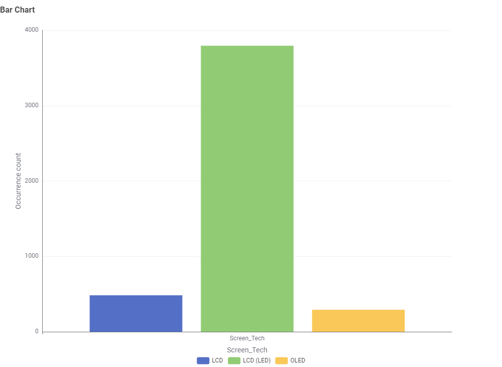
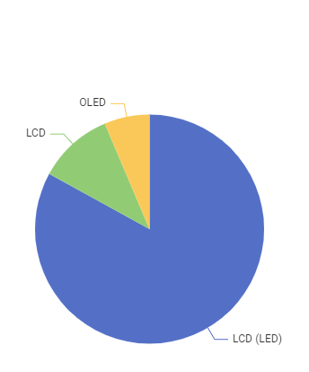
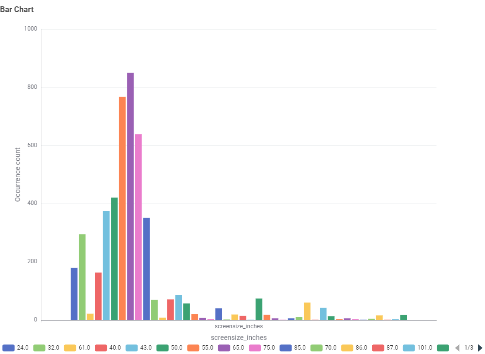
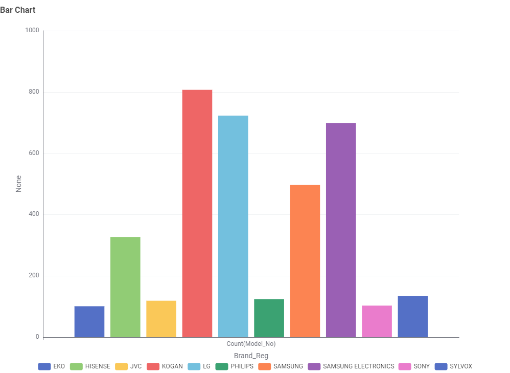
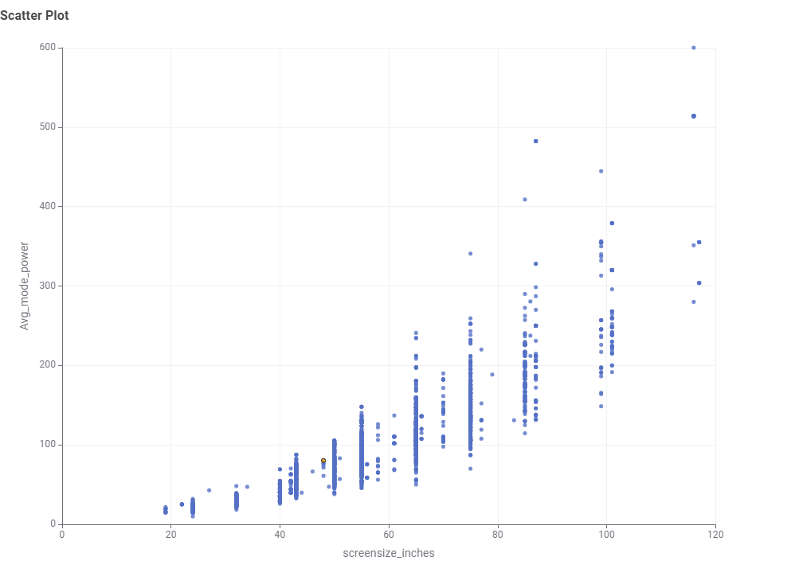
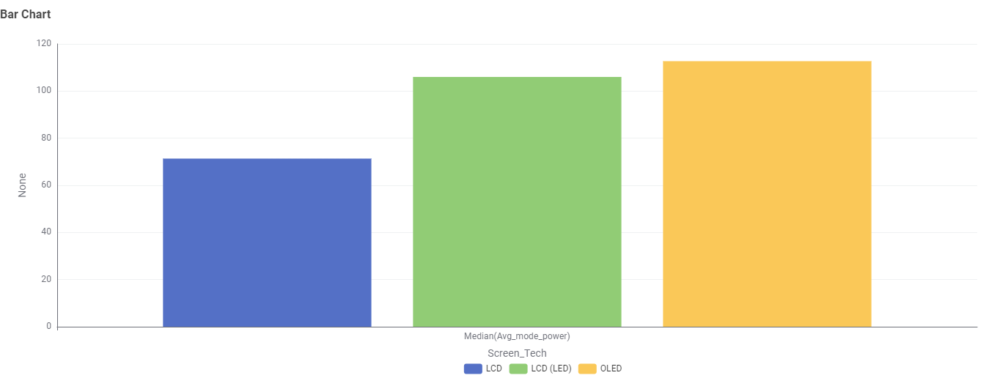
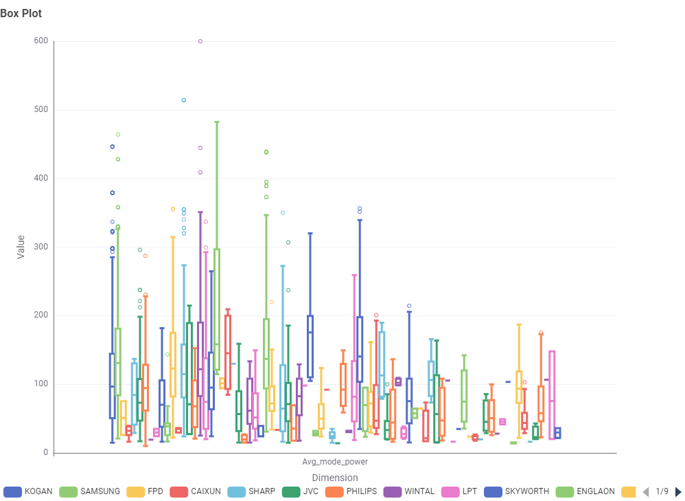
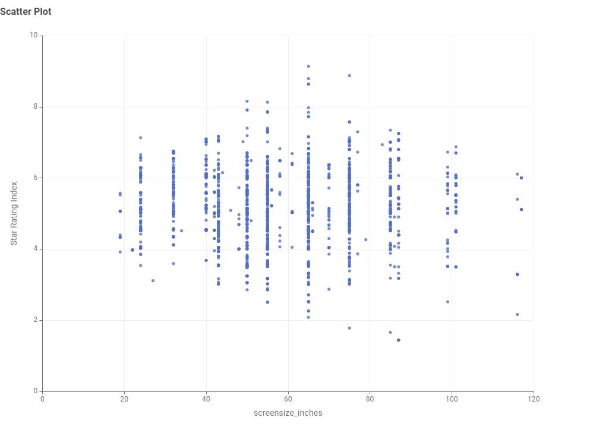

The Energy Rating Label
In Australia, many appliances must carry an Energy Rating Label. It shows a star rating (more stars means more efficient) and an estimated annual energy use in kilowatt-hours (kWh).
You are viewing: Home
Household appliances account for a large share of home energy use in Australia. This site explores how much energy common appliances use, starting with televisions sold in the Australian market.
Explore televisionsIn Australia, many appliances must carry an Energy Rating Label. It shows a star rating (more stars means more efficient) and an estimated annual energy use in kilowatt-hours (kWh).
Two appliances of the same size can differ widely in energy use. Over the life of an appliance, the running cost can be more than the difference in purchase price.
Interactive data visualisations built from Australian appliance registration data will be added to this site in later tasks.
A TV can be switched on for hours every day, so its running cost adds up over its lifetime. We looked at the energy data for 4,570 TV models currently registered for sale in Australia to answer one question: how can you choose a TV that costs less to run?
Of the 4,570 models available in Australia, about 83% use LCD (LED) screens. OLED, the newer premium technology, makes up only about 6% of models.


Screen sizes range from 16 to 116 inches. The most common sizes are 65 inches (851 models), 55 inches (767) and 75 inches (639).

A small number of brands offer most of the choice. Samsung, Kogan and LG together account for more than half (57%) of all models.

Screen size is the biggest factor in how much power a TV uses. Each dot below is one TV model. A typical TV of 32 inches or less uses about 26 watts, while a typical TV over 75 inches uses about 216 watts, more than eight times as much.

What this means for you: choosing a size that suits your room is the most effective way to keep running costs down.
At first glance, standard LCD TVs have the lowest typical (median) power use. However, the typical standard LCD model is 55 inches, while LCD (LED) and OLED models are typically 65 inches.

When we compare power use for the same amount of screen, the difference disappears. All three technologies use about 10.5 to 10.7 watts for every 1,000 cm² of screen.
The same applies to brands. Power use varies within every brand, and brands that mainly sell larger TVs have higher typical power use.

What this means for you: don't choose a technology for energy reasons alone. Compare TVs of the same size instead.
Star ratings range from about 1 to 9 stars across almost every screen size. The star rating already takes screen size into account, so it tells you how efficient a TV is compared with other TVs of the same size.

What this means for you: once you have chosen a size, pick the model with the most stars on its Energy Rating Label.
Enter a TV's power use (from the Energy Rating Label or product specifications), how long you watch each day, and your electricity price.
Estimated cost: $0.00 per year
The default of 106 watts is the median power use of an LCD (LED) TV in this data set. Electricity prices vary by state and retailer; check your bill for your rate.
Data: Australian Government Energy Rating registration data for televisions (September 2026 extract), cleaned and aggregated with KNIME. See the About Us page for details and limitations.
PowerWise is a student project built for COS30045 Data Visualisation at Swinburne University of Technology.
To help Australian households compare the energy use of household appliances using clear, interactive data visualisations.
Australian Government Energy Rating registration records for televisions (tv_2026_09_08.csv), cleaned and aggregated with KNIME. Only models marked "Available" and sold in Australia are included.
HTML, CSS and JavaScript, version controlled on GitHub and hosted on Vercel.